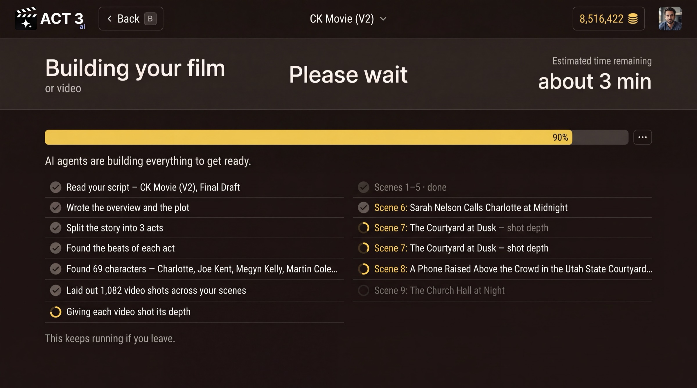

Step 4 of 8
Watch your script break down
ACT 3 AI reads your script and breaks it into acts, beats, scenes and shots. Watch the rows tick off as each part is found. At 100 percent, press Visual Options to go on.

What this page is
This is the import's progress page. ACT 3 AI's agents read the screenplay the way a first assistant director breaks one down: the plot, the acts, the beats of each act, the cast, then every scene split into the video shots that will cover it. Each row ticks off as it lands; the spinning circle marks the one in progress.
- A beat is one turn in the story: something changes for a character.
- A scene is continuous action in one place and time, the unit your INT./EXT. headings mark.
- A shot is one camera setup, from cut to cut. A feature film can hold a thousand of them.
The import keeps running if you leave the page. A row that fails shows on its own line with a retry, so nothing is lost silently.
Why you go next to Visual Options
When the bar reaches 100 percent, Visual Options › appears (keyboard: V). Your story is now in ACT 3 AI; next you decide how it looks.